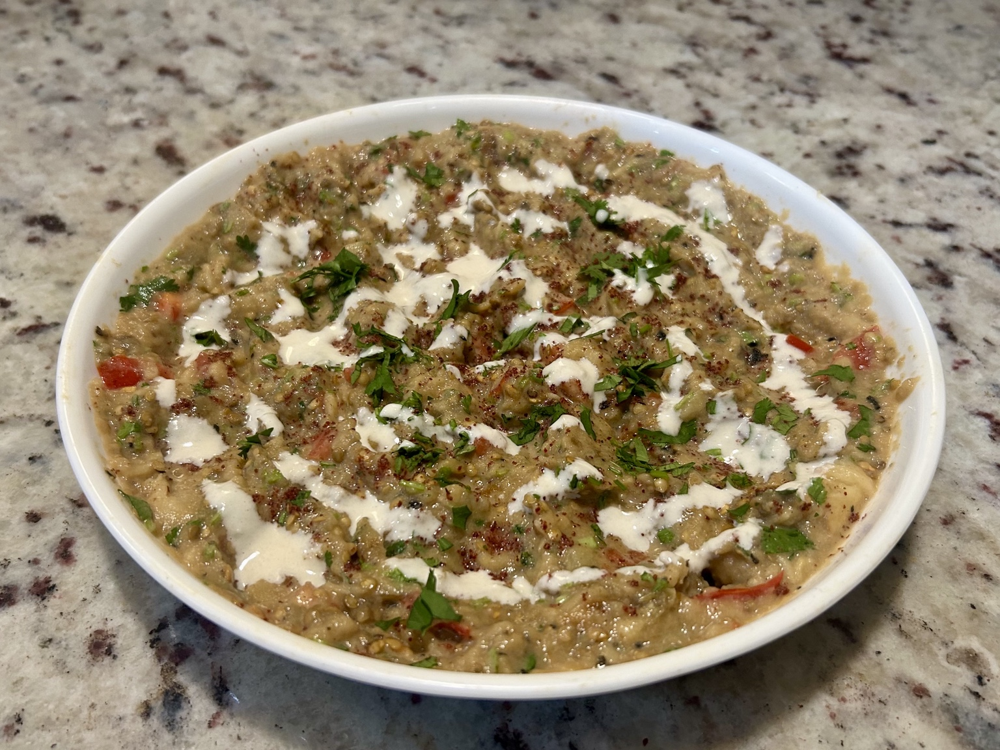
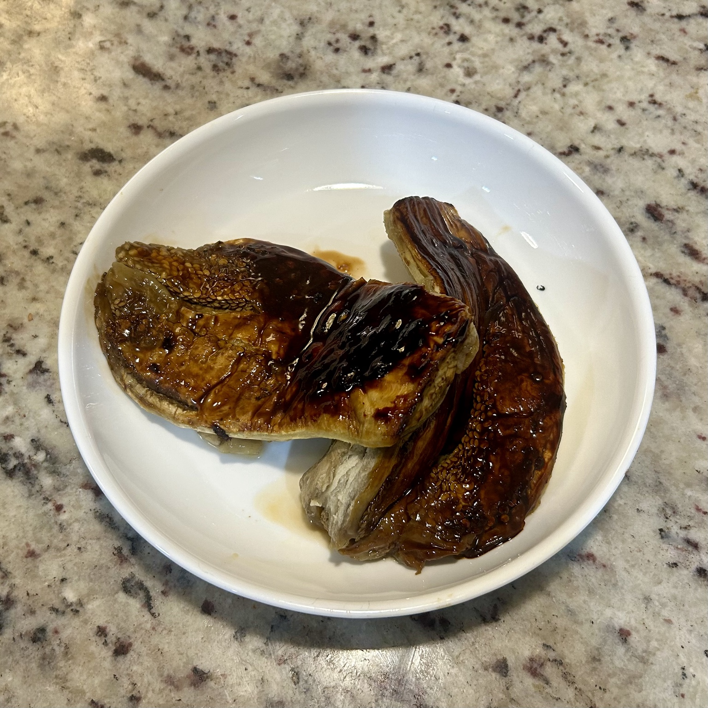
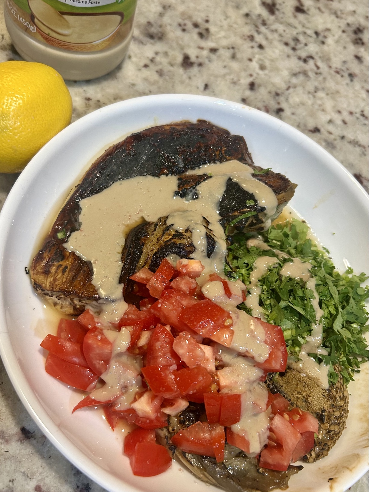
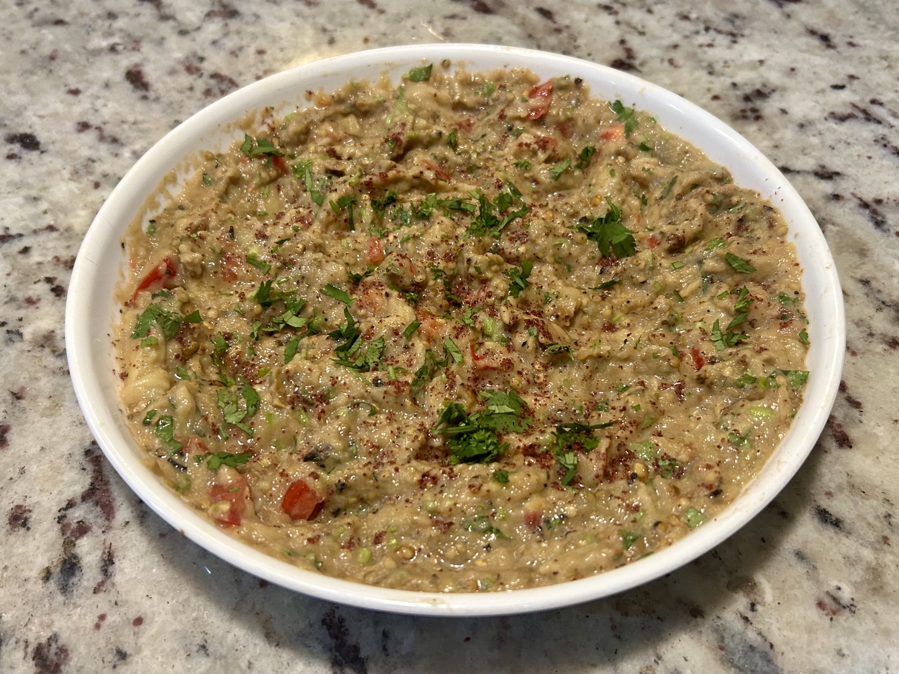

Side
Rozpieszczony tata
Baba ganoush: roasted eggplant kept deliberately textured, with tahini, lemon, cumin, fresh tomato, and coriander. Garlic can sit right at the front or quietly in the background.




Ingredients
- 1 eggplant
- Juice of 1/2 lemon
- 1/2 tsp ground cumin
- 1 Roma tomato, chopped
- A few stalks fresh coriander, chopped
- 1.5 tbsp (~20 g) tahini
- Salt, to taste
Garlic — choose the profile
- For a garlic-forward version: 1 fresh garlic clove, finely grated
- For a gentler background garlic: several garlic cloves, roasted alongside the eggplant and mashed into the flesh
Method
- Roast the eggplant at 425°F for about 45 minutes, until completely soft, deeply browned, and collapsed.
- Let it cool enough to handle, remove the skin, and transfer the soft flesh to a bowl. Drain off excess liquid if necessary.
- Mash the eggplant, keeping some texture rather than turning it into a perfectly smooth purée.
- Mix in the tahini, lemon juice, cumin, and salt.
- Fold in the chopped Roma tomato and fresh coriander.
- For the garlic-forward profile, grate in one fresh garlic clove. For the softer version, mash in the garlic cloves roasted with the eggplant instead.
- Taste and adjust the lemon and salt before serving.
Serving
Finish with sumac and fresh coriander. A loose sauce of plain yoghurt, tahini, grated garlic, and lemon juice can be drizzled over the top. This final garlic sauce is particularly good with the roasted-garlic version: the eggplant keeps a delicate background warmth while the drizzle restores a clean, fresh garlic edge.
Nutrition
Approximate macros for the whole base recipe, including one fresh garlic clove but excluding the optional garnish and yoghurt–tahini sauce: 255 kcal | 8.9 g protein | 36.1 g carbs | 11.8 g fat | 16.5 g fibre.
Notes
“Rozpieszczony tata” is my deliberately literal-minded Polish joke on one common interpretation of the name baba ganoush: the pampered or spoiled father. The etymology itself is less certain than the joke, which is reason enough to keep both names around. The name also explains why I love this dish ;)